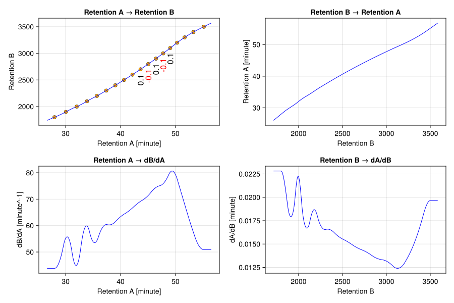
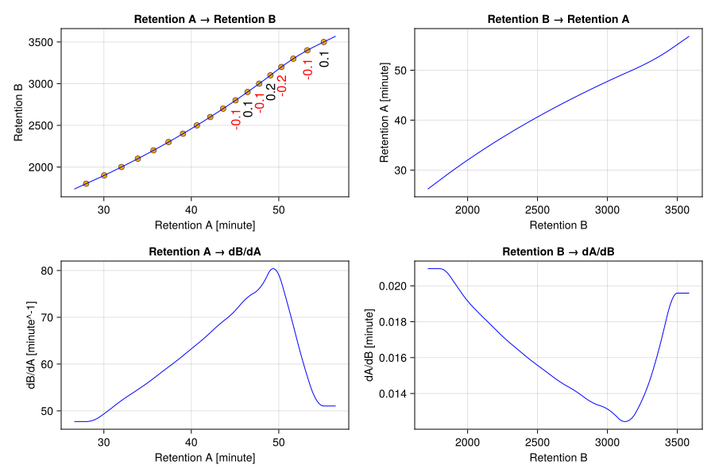

Overview
Mapping rationale
Retention mapping converts an irregular axis (time or distance) into a stable, comparable index so chromatograms from different runs can be aligned, interpolated, and compared on a common grid. This makes retention behavior reproducible across batches, instruments, and methods while preserving ordering and monotonicity.
A continuous, differentiable mapping does more than align coordinates: it enables intensity-aware transforms via the Jacobian (in 1-D this is just the derivative). When you warp the axis, the mapping derivative provides a principled way to rescale intensities so areas and peak shapes remain physically meaningful. This yields consistent peak integrals across transformed domains, supports smooth interpolation, and avoids artifacts from piecewise or discontinuous mappings.
Mapping points are typically collected from standards with known reference positions. In gas chromatography, a common example is an n-alkane ladder, which yields paired arrays of retention times and Kováts retention indices (Kováts 1958). Another approach uses a curated set of internal standards (e.g., a few stable compounds spiked into every run), producing matched retention pairs that anchor the mapping across batches (Skoog et al. 2007).
JuChrom retention mapping
JuChrom provides fitmap to infer an empirical, smooth mapping function from paired retention values in domain A (e.g., retention times) and reference values in domain B (e.g., Kováts indices). The fit constructs a cubic B-spline and chooses the smallest smoothing penalty that still enforces a strictly increasing curve. Concretely, the objective minimizes squared residuals plus a curvature penalty based on the spline’s second derivative: large changes in slope are penalized, which discourages wiggles and yields a smoother, more stable mapping between anchor points. In parallel, nonnegative first-derivative values are enforced at a dense grid of points to guarantee monotonicity. This yields a continuous, differentiable, and invertible function (stored in a RetentionMapper) that supports both forward mapping and reliable reverse mapping via the monotonic inverse.
For most users, the primary tuning parameter when applying fitmap is smoothing strength (λ). Larger values emphasize smoothness over exact fit to the anchor points, while smaller values track the anchors more tightly. The default automatically searches for the smallest λ that still yields a strictly monotonic fit.
JuChrom includes visual diagnostics for a fitted mapper, letting you inspect the forward and inverse fits side by side. The plotting helpers load automatically once a Makie backend is available.
Example
# Load JuChrom
using JuChrom
# Load CairoMakie for plotting
using CairoMakie
CairoMakie.activate!()
# Known mapping points: retention times (minutes) and Kováts indices.
# JuChrom reexports Unitful, so unit literals work without `using Unitful`.
retention_times = [
27.972, 30.043, 32.011, 33.884, 35.679, 37.398, 39.049, 40.636, 42.164,
43.636, 45.058, 46.431, 47.759, 49.046, 50.296, 51.669, 53.266, 55.149,
]u"minute"
kovats_indices = [
1800.0, 1900.0, 2000.0, 2100.0, 2200.0, 2300.0, 2400.0, 2500.0, 2600.0,
2700.0, 2800.0, 2900.0, 3000.0, 3100.0, 3200.0, 3300.0, 3400.0, 3500.0,
]
# Fit a smooth, strictly increasing mapping function
mapper = fitmap(retention_times, kovats_indices)RetentionMapper with 18 calibration points
├─ Domain A (input):
│ ├─ Range: 27.972 to 55.149 (minute)
│ └─ Type: Float64
├─ Domain B (output):
│ ├─ Range: 1800.0 to 3500.0 (unitless)
│ └─ Type: Float64
├─ Spline:
│ ├─ Order: 4 (cubic)
│ ├─ Knots: 22
│ └─ Coefficients: 22
└─ Fit quality:
├─ Min residual: 0.000
├─ Avg residual: 0.000
└─ Max residual: 0.000
The printed RetentionMapper summary provides a compact overview. For a closer look, plot the forward and inverse maps (including derivatives) and the residuals.
# Visual diagnostics (forward/inverse maps and residuals)
fig = plot(mapper; reverse=true, size=(900, 600))
save("retention_mapper.svg", fig)
While the inferred mapping is fully satisfactory, you may want to tune the smoothing strength if the anchor points themselves are noisy or not fully trustworthy. Raising λ_min prevents overfitting (less wiggle, more stability), while raising λ_max can help recover monotonicity when a fit would otherwise fail. Here we increase λ_min from its default (1e-20) to 1e-7 and examine the effect on the derivative plots.
# Fit mapping function with λ_min set to 1e-7
mapper_λ_min_set = fitmap(retention_times, kovats_indices, λ_min=1e-7)
fig = plot(mapper_λ_min_set; reverse=true, size=(900, 600))
save("retention_mapper_λ_min_set.svg", fig)
In the derivative plots the mapping is noticeably smoother, but it no longer passes exactly through the anchor points, as shown by the residuals. Whether the suppressed wiggles reflect real structure that should be modeled or are noise that should be smoothed away is a judgment call for the analyst.
Let's continue with the mapper inferred using the default λ_min and use it to compute retention indices for a few retention times, including extrapolation beyond the domain.
ri = applymap(mapper, 41.5u"minute") # single value2556.086726437562rts = [10, 29.3, 35.0]u"minute"
ri = applymap.(mapper, rts) # dot form broadcasts over the vector3-element Vector{Float64}:
941.2342359932637
1863.7322806002733
2161.6673554876Mappings are defined over the anchor domain. Values outside that domain are linearly extrapolated using the slope at the nearest boundary. Use warn=true on applymap / invmap / derivmap / derivinvmap or the raw* variants to surface extrapolation during analysis.
To invert the mapping (e.g., from Kováts to retention time), use invmap.
ris = [1853.2, 3137.3, 3501.0]
rts = invmap.(mapper, ris) # dot form broadcasts over the vector3-element Vector{Quantity{Float64, 𝐓, Unitful.FreeUnits{(minute,), 𝐓, nothing}}}:
29.081984562079636 minute
49.5074124475788 minute
55.1688195029413 minuteTo transform intensities with the Jacobian, use the derivative of the mapping. If ri = f(t), then d(ri)/dt is the local stretch factor; to preserve area, you divide the intensity by this slope at the same time point.
scantimes = [1802.5, 1803.0, 1803.5]u"s"
intensities = [1000, 4000, 3500]
dridt = derivmap.(mapper, scantimes)3-element Vector{Quantity{Float64, 𝐓^-1, Unitful.FreeUnits{(minute^-1,), 𝐓^-1, nothing}}}:
49.27528351867995 minute^-1
49.28703268269347 minute^-1
49.29882599514628 minute^-1Note that you can supply mapping inputs in any compatible time unit; values are converted automatically.
The derivative tells you how much the Kováts retention index changes per unit time. To transform the intensities associated with each scan time, divide by the Jacobian (i.e., d(ri)/dt).
ints_transformed = intensities ./ dridt3-element Vector{Quantity{Float64, 𝐓, Unitful.FreeUnits{(minute,), 𝐓, nothing}}}:
20.294150101052313 minute
81.15724932664794 minute
70.99560546015016 minuteThe transformed intensities are now expressed per unit of retention index rather than per unit time, reflecting the change of variables.
Mapping tools at a glance
| Function | Use case |
|---|---|
fitmap | Infer mapping function from paired points |
applymap | Map retention domain A → retention domain B |
invmap | Map retention domain B → retention domain A |
derivmap | Jacobian d(ri)/dt for intensity scaling |
derivinvmap | Inverse mapping derivative |
rawapplymap | Unitless variant of applymap |
rawinvmap | Unitless variant of invmap |
rawderivmap | Unitless variant of derivmap |
rawderivinvmap | Unitless variant of derivinvmap |
retentions_A, retentions_B | Anchor vectors used to fit the mapper |
rawretentions_A, rawretentions_B | Unitless anchor vectors |
retentionunit_A, retentionunit_B | Stored units for the anchor domains |
extras | Metadata attached to the mapper |
mapmin, mapmax | Numeric minimum and maximum value of the input domain |
invmapmin, invmapmax | Numeric minimum and maximum value of the output domain |
rawmapmin, rawmapmax | Unitless variant of mapmin and mapmax |
rawinvmapmin, rawinvmapmax | Unitless variant of invmapmin, invmapmax |
For full API details, see Mapping tools.
JLD2 support
JuChrom also ships a JLD2 extension so RetentionMapper objects can be stored and restored with JLD2. The extension loads automatically once JLD2 is available.
using JLD2
# Save and load single mapper
save_object("retention_mapper.jld2", mapper)
mapper_loaded = load_object("retention_mapper.jld2")
# Save multiple mappers under their own names and load them back
jldsave("retention_mappers.jld2"; mapper, mapper_λ_min_set)
mapper_reloaded = JLD2.load("retention_mappers.jld2", "mapper")RetentionMapper with 18 calibration points
├─ Domain A (input):
│ ├─ Range: 27.972 to 55.149 (minute)
│ └─ Type: Float64
├─ Domain B (output):
│ ├─ Range: 1800.0 to 3500.0 (unitless)
│ └─ Type: Float64
├─ Spline:
│ ├─ Order: 4 (cubic)
│ ├─ Knots: 22
│ └─ Coefficients: 22
└─ Fit quality:
├─ Min residual: 0.000
├─ Avg residual: 0.000
└─ Max residual: 0.000
mapper_λ_min_set_loaded = JLD2.load("retention_mappers.jld2", "mapper_λ_min_set")RetentionMapper with 18 calibration points
├─ Domain A (input):
│ ├─ Range: 27.972 to 55.149 (minute)
│ └─ Type: Float64
├─ Domain B (output):
│ ├─ Range: 1799.9 to 3500.6 (unitless)
│ └─ Type: Float64
├─ Spline:
│ ├─ Order: 4 (cubic)
│ ├─ Knots: 22
│ └─ Coefficients: 22
└─ Fit quality:
├─ Min residual: 0.001
├─ Avg residual: 0.212
└─ Max residual: 0.910
References
- Kováts E (1958): Gas-Chromatographische Charakterisierung organischer Verbindungen. Teil 1: Retentionsindices aliphatischer Halogenide,Alkohole, Aldehyde und Ketone. Helvetica Chimica Acta 41: 1915-1932.
- Skoog DA, Holler FJ, Crouch SR (2007): Principles of Instrumental Analysis. 6th ed. Thomson Brooks/Cole.